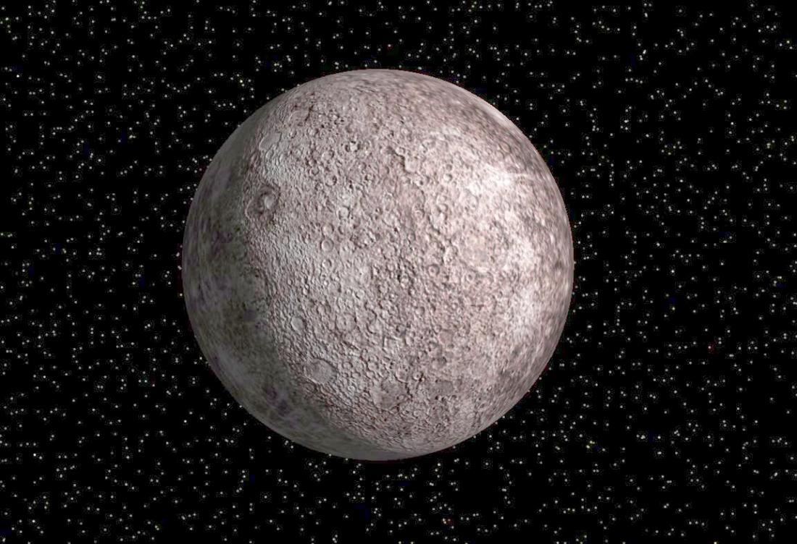

Меркурий это самая близкая к солнцу планета. Она наименьшая из планет земной группы. Меркурий был назван в четь древнегреческого бога торговли быстрого Меркурия, так как она движется по небу быстрее других планет. Средняя температура на ней составляет 67°C.

Главная